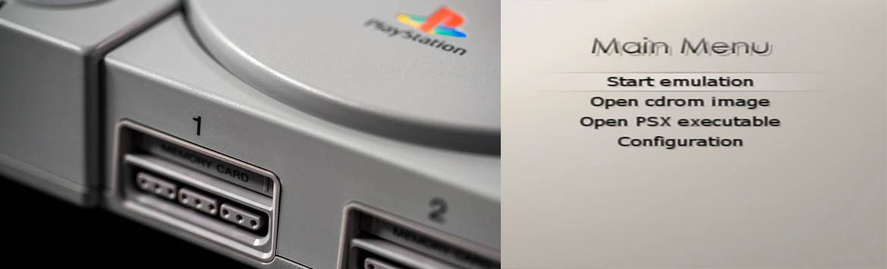
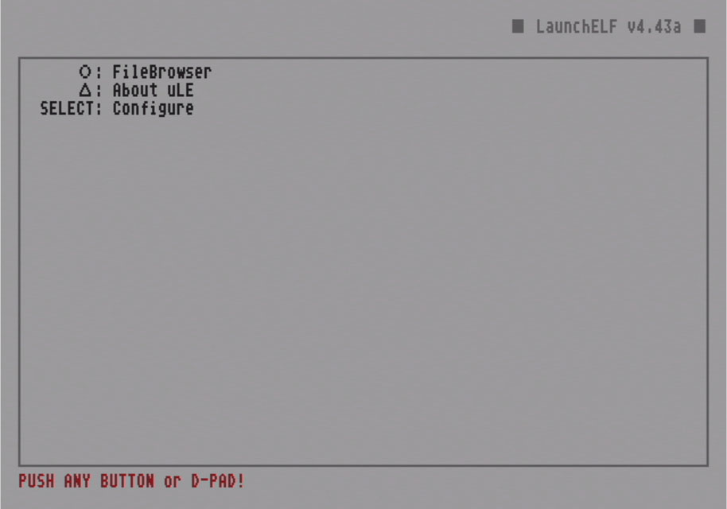
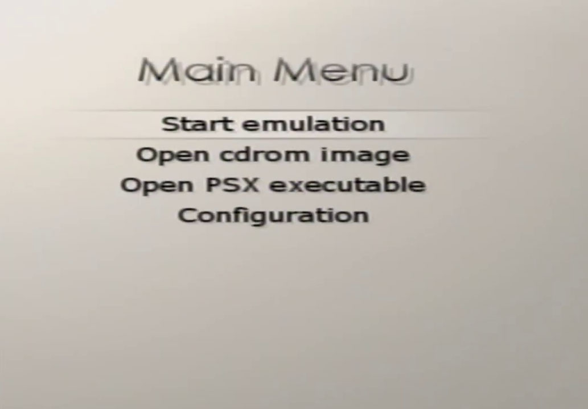

PS1 en PS2
Podemos probar nuestra aplicación para correr juegos de PS1 en nuestra PS2.

Para esta Guia
Requisitos para este tutorial
- USB en formato FAT32

Para este Tutorial
- Descomprimimos los archivos de Emulator.rar y PS1Bios.rar y los pasamos a nuestro USB
- En el archivo Emulator.rar hay 2 pasamos el PS1 Emulator es el más estable, pero si quieren pasar el otro no hay problema
- En el archivo PS1Bios.rar están la bios de PS1 listo para integrar a nuestro APP
- Copiamos la carpeta bios dentro de la carpeta del programa que se encuentra la misma carpeta bios
- Dentro de la carpeta Games pasamos nuestros juegos de PS1 en formato .bin / .cue o .img para nuestra aplicación
- Con todo esto nos vamos a nuestra consola
- Para dejar nuestra aplicación lista para usar podemos colocarla en el menú de APP del OPL (opcional para dejarlo fijo)
- Para esto debemos crear un archivo llamado
conf_apps.cfg - Y dentro colocamos lo siguiente
- Nombre APP=Ubicación quedaría de la siguiente forma ej:
PS1 Emulador=mass:/APPS/PS1 Emulator/ps2psxe-gui-pack.elf - Lo guardamos y lo pasamos a la raíz de nuestro USB y listo.
- Todo listo conectamos nuestra USB a nuestra consola y abriremos Funtuna o FMCB para seguir con los siguientes pasos 
- Opción 1 (para Probar)
- Abrimos uLaunchELF
- Esperamos que cargue y le damos al

- Después nos vamos a MASS:/ con (nuestro USB)
- Y buscamos el archivo
ps2psxe-gui-pack.elfy le damos al - Y estaría listo.
- Opción 2 (para dejarlo en OPL)
- Con esta opción lo demos dejar en el menú del OPL
- Vamos a APP del menú de OPL y estaría con el nombre que le asignamos al archivo
conf_apps.cfg - Solo seleccionamos el nombre (PS1 Emulator) y listo.
- Una vez ejecutado nuestro PS1 Emulador 
- Para configurar nuestro emulador nos dirigimos a configuración
- Después nos vamos a System
- Le daremos una ruta a nuestro emulador para eso vamos a PS2PSXe path
- Y le asignamos la siguiente ruta:
mass0:/APPS/PS1 Emulator/ps2psxe.elf - Después seleccionamos nuestra BIOS para esto abrimos Select BIOS y seleccionamos la ruta:
mass0:/APPS/PS1 Emulator/Bios/ - Y seleccionamos alguna de las bios que le pasamos en denante
- Y estaríamos listo con
 nos devolvemos al anterior menú
nos devolvemos al anterior menú - Nos vamos a Audio para confirmar Emulate sound y
- Nos vamos a Input y le damos a Digitize pad y
- Para finalizar nos vamos a Save default config
- Y listo nos devolvemos al menú principal con
- Para cargar un juego nos vamos a Open cdrom image y buscamos la ruta de nuestro juego que pasamos a nuestro USB ej:
mass0:/APPS/PS1 Emulator/Games/ - Y seleccionamos siempre el .bin del juego
- Una vez la ruta está cargada abajo le damos a Start emulation
- Y listo
- Si desea cargar otro juego hay que reiniciar nuestra consola y solo seleccionar el juego ya que las configuraciones están cargadas y listas.

×